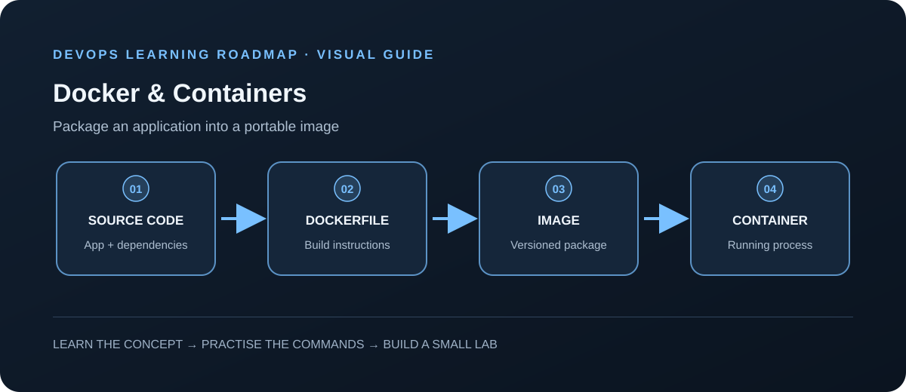

Image
A read-only template containing application files and dependencies.
A container packages an application and its dependencies into an isolated process environment. Docker provides tools to build images, run containers, connect them to networks and persist data.
A container packages an application and its dependencies into an isolated process environment. Docker provides tools to build images, run containers, connect them to networks and persist data.
Containers make application environments more consistent between a laptop, CI pipeline and production. They are also the packaging unit commonly deployed to Kubernetes.

Source code and a Dockerfile build an immutable image; a container runs from that image with ports, environment settings, storage and a network.
A read-only template containing application files and dependencies.
A running instance of an image with its own process and isolation.
A set of instructions used to build an image.
A service that stores and distributes images, such as Docker Hub or a private registry.
Persistent storage that survives container replacement.
Connect containers and publish a container port to the host.
Define and run a multi-container application from a YAML file.
Run these in a lab environment first. Some commands require the related tool to be installed and configured.
| Command | What it does | When you use it |
|---|---|---|
docker version | Show Docker client/server versions | Confirm the engine is available. |
docker pull nginx:alpine | Download an image | Fetch a base image from a registry. |
docker run -d --name web -p 8080:80 nginx:alpine | Run a detached container | Start nginx and publish host port 8080. |
docker ps -a | List containers | Inspect running and stopped containers. |
docker logs web | View container logs | Troubleshoot application startup and runtime. |
docker exec -it web sh | Open a shell in a container | Inspect a running container for debugging. |
docker build -t demo-app:1.0 . | Build an image | Package the application using a Dockerfile. |
docker inspect web | Show container metadata | Inspect networks, mounts, environment and configuration. |
docker stop web && docker rm web | Stop and remove a container | Clean up a lab container. |
docker compose up -d | Start a Compose application | Launch a multi-service local stack. |
Containerise a simple web application. Build and tag an image, run it on a custom port, inspect logs, persist one data directory with a volume, and publish the image to a registry.
Tip: Save your notes, commands, screenshots and troubleshooting findings in a GitHub repository. Your learning record becomes part of your portfolio.
Checklist is for your current visit; it is not saved between devices or browser sessions.